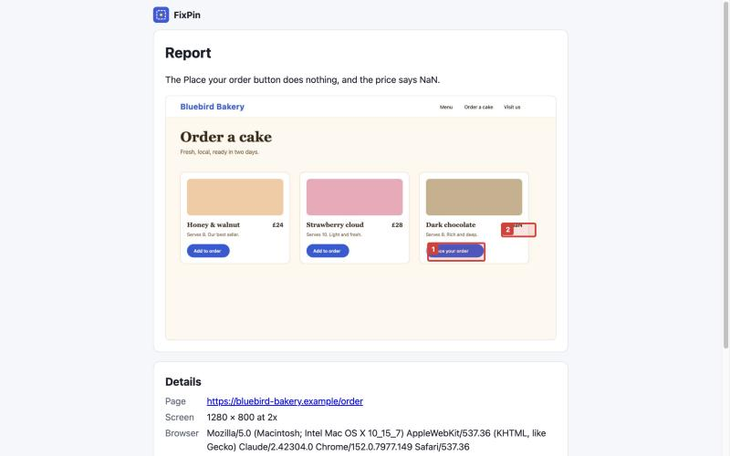

Sharing a report
The link#
Every report has its own link, made of a random 192-bit code that can't be guessed. Anyone who has the link can open the report, so share it only with the people helping you.
How long it lasts#
You choose 1, 7 or 30 days. After that the report and its screenshot are deleted automatically.
Passcode#
Add a passcode to ask for one before the report opens. Tell the person the passcode separately from the link (a different message is best).
Delete it early#
Open the report on the device that created it and press Delete now. It is gone for everyone who had the link.
What the report page shows#

The screenshot with your numbered spots, your note, the page address, screen size and browser, any errors the extension collected, and a Copy details button that formats everything as plain text for an email or ticket.
Size limit#
A report can be up to 2 MB. The app shrinks large screenshots for you.
Still stuck? Check the FAQ, or ask on GitHub.